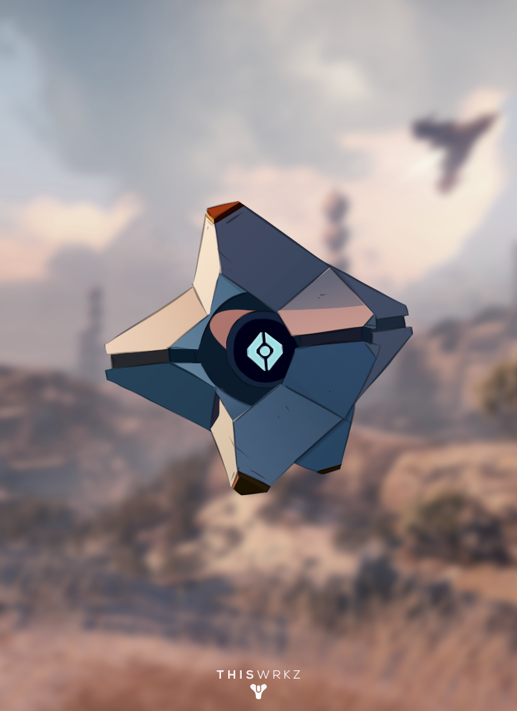
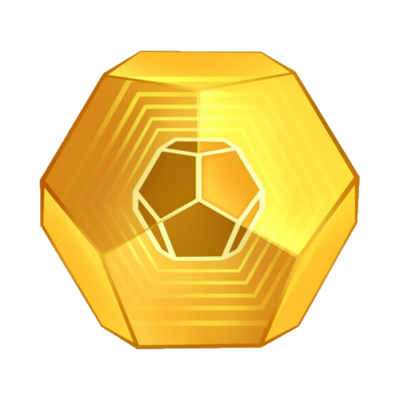
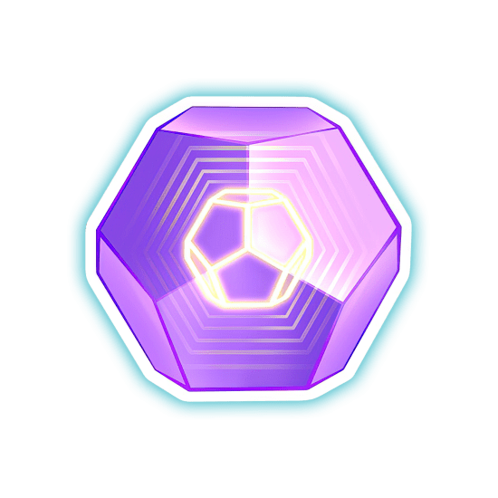
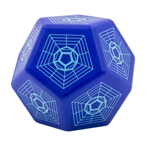
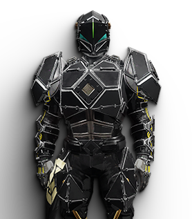
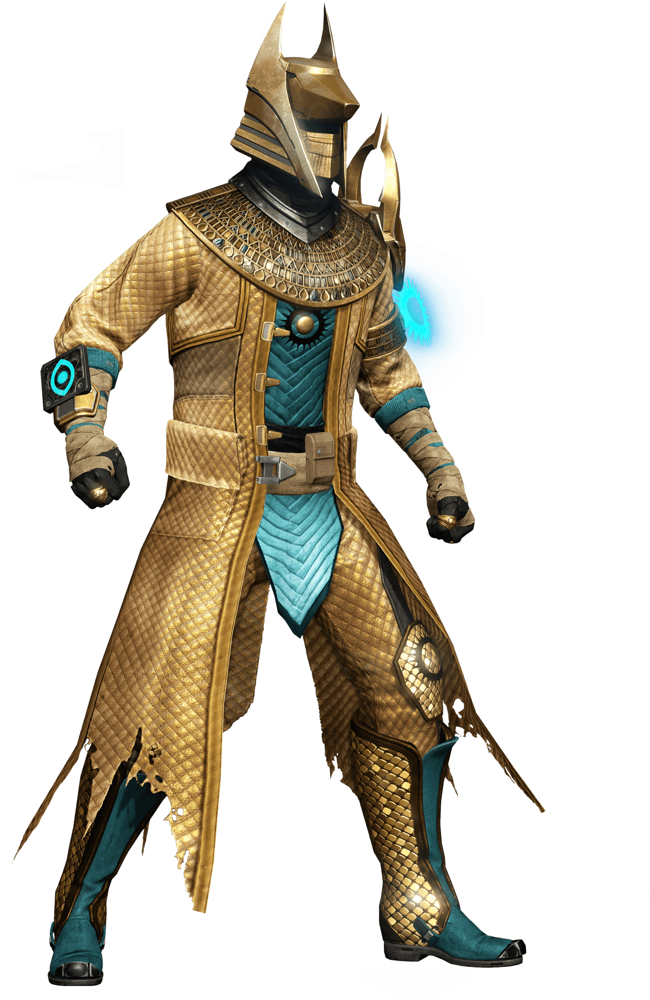
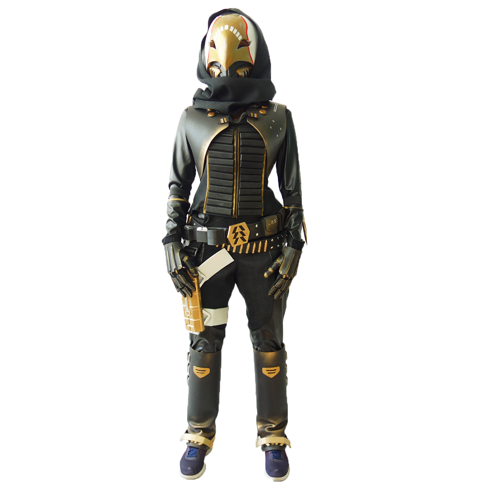

WELCOME: "Enjoy your time here in the Home page!".
 Destiny 2: The video game
What is this game about?:
A lot folks play this game as an rpg game. There is a PVE mode and a PVP mode. The PVE mode features an awsome raid and other activities.
Some of these activites deal with Gambit, dungeons, and many more. Destiny 2 has an variety of PVP modes with fun maps, weapons, and so much more.
Let's connect the two real quick! Destiny 2 has a many DLC expanison packs, so you and your friends can enjoy endless content!
What's PVE? and PVP?
You don't know what PVE or PVP is?! PVE stands for player versus enemy where as PVP stands for player versus player. Due to the many exapnsion passes, there are lot's of enemy's.
Some of these enemys are small or huge. They have a chance of dropping many weapons and armour for your liking! As for PVP, you can team up with your
friends and have a custom match filled with fun.
Where is this avaliable for download?
Playstation, Xbox, PC;
You should be able to download it digitally or get a disc! I play on PS5.
How to power up your charcater:
Powering up your character is important. Otherwise, you won't be able to keep up with other players or have any fun. While powering up your
may seem broad, let's break it down!
Here is a list of things you should know:
* Understand Weapons:
Assault, pulse, handcanaon, and other weapons have their specailities. For PVP, many players choose what's best for their character.
For instance, because hunters hide in the shawdow, they'll tend to use snipers. As for PVE, many players well use weapons that can generate orbs of light or a benefit to othe
* Armour:
Helmet, Chestplate, Legs, boots, charcater item, and artifact. Armour with high stats rolls can allow additional perks in their slots
These slots can give a buff to your weapons or to your double the stats on your armour!
* Stats:
Resillence, Recovery, discipline, and all other stats can differ based on your armour stats.
Stats can change the playing feild allowing you take more damage or deal more damge
The discipline stat allows you to throw more gernades!
Choosing the right activities
Choosing the right activities is important. This is what's going to allow you to power up your character even more. Make sure to pay
special attention to the examples for each point!
* Raids:
We discussed raids brefily before. Raids all multiple activities. They have muliple boss fights and maze layers. Please note
the boss fight's have certain time intervals to be defated in. For example, the final boss in, Kings fall: Oryx
will only give you about, at most, less than 50 minutes. You should complete raid with the best weapons in your arsenal,
assign players where they're best experinced, and get the best loot. A entry level raid would probably be Scourage of the past,
however this raid has been taken out. Therefore, try lavithian.
* Crucible:
Crucible offers a select variety of game modes: team death match, free for all, trials of osiris, and more. To be clear
these game modes range from fun to competitve. Both game modes have the ability to give good loot. However, the competitive gamemodes
have the ability to drop even better gear for your power level.
* Strikes and nightfalls:
You can think of strikes as a basic co-op mission. Although, when it comes to nightfalls, it makes a strike look easy.
According to Kaleb's article on Destiny 2: Nightfall Missions Guide (Everything You Need To Know - SCREENRAT),
nightfall's are simialr to strikes, but they place much harder modifires on these missions. For example, one modifier causes
only one element in the game to be superior and other eneimes to give twice the damage.
This article was posted on:
*below is table on my favorite load out in destiny 2*
weapons
Hunter class:
armour
The hunter class has a 3 main subclasses
It has solar, arc, void, and more
Graviton lance: Pulse rifle
This pulse rilfe can shoots void element!
The Aspotheosis viel is a exotic piece
Aspotheosis veil
EYEASLUNA: handcannon
This handcannon is great for PVP!
The Wormhusk Crown can heal you when you dodge
Wormhusk Crown
Suros Regime: Auto rifle
This weapon can increase th RPM as time goes on!
This helmet increases your stealth!
Graviton Forfeit
Let's discuss rarity levels in destiny 2!
* EXTOIC:
Exotic gear is hard to find but can be very useful. As for weapons, there are exotic weapons that can do unatural functions.
For instance, the weapon thorn. This weapon can posion enimies! And sometimes, it can make you drop a boost on their ghost.
* LEGENDARY:
Though legendary gear is not exotic it is still good. This is because you can't have more than one exotic gear equppied
There are many mods and complementary gear you can apply to your legendary gear. In fact, it legendary gear becomes the norm!
* RARE:
To be quite honest, rare gear is baby gear. But, this is what allows you to find the legendary gear you begin to desire and crave.
Even though most players won't let you in to do raids with rare gear, it's important to remember we all start somewhere!
*Green is also a rarity, but it you level up so quick you don't notice it*
REMEMBER THAT YOU CANNOT WEAR MORE THAN ONE EXOTIC GEAR

1. On the right is a exotic engram. The exotic engram offer's exotic gear.
Just to recall, we gave some examples earlier. Exotic engrams can be found
from harder diffucltuy level in the activties we mentioned in the first page.
They can also be found from xur (the exotic vendor)

2. The legendary engram is still hard to find. Of course, it offer's legendary gear.
This legendary engrams can be found at a more medium difficulty level for the activites
we mentioned above. Note, that just because you found legendary gear, this doesn't mean
that it will always give you a boost of power (this is a rule made to keep players playing)

3. The rare engram can be found almost every where. In fact, you may even find it in
the much harder difficulty level activites we mentioned in the first part of this page. Of course, the rare
engrams offer rare gear. Rare engrams won't be of much help if you're at
a high level.
Below is a 3D model of the following classes/characters in Destiny 2:

1. This is a titan. The titan here is actually a side character within the destiny 1 and 2 franchise.
In fact, this character is so popular, that he has a helmet named after him. This helmet is called
"helm of saint-14."

2. This is a warlock. The armour that the warlock is wearing here is very nice. Not only is it nice but
hard to get. To be accurate, this is the trails of osiris armour.

3. This is a hunter. The hunter is wearing a extoic helmet. The name of this helmet is known as the
"celestial nighthawk." As a reminder, this helmet is only useful when you have the solar subclass equipped. This is because the helmet allows
you to combine all your golden shots into, bursting into ultimate damage!!!
The content below regards about the vendors in destiny 2!
WHAT KIND OF VENDORS DO WE HAVE?
ZAVALA: THE TITAN
BANSHEE-44: THE GUNSMITH
IKORA: THE WARLOCK!
SHAX: CRUCIBLE VENDOR!
Below are some qoutes from our favorite AI NPC'S:
The contents below regards the qoutes from our vendors!
Cayde-6: Never ever cut a deal with a warlock Gunsmith: Careful out there Cryptographer: What do you have for me today Guardian? ZAVALA: We must prepare for the worst! Ikora: Now that we have settled our time with the cabal, we can team up with them!
The content below regards my personal thouhgts in Destiny 2
RED AND GREEN FLAGS ABOUT DESTINY2?:
1. When you rush in a crucible match without a gameplan
2. When you wear the appropriate gear for a character in a crucible match